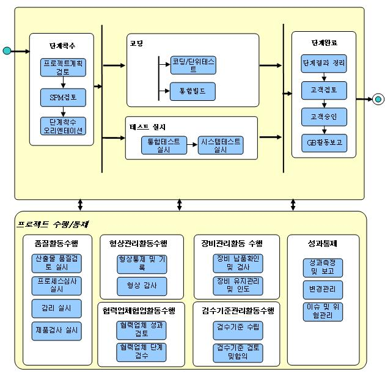

1. 개요 (Overview)
|
구분 |
내용 |
|
목표
(Goal) |
설계 산출물에 정의된 명세에 따라 실제 코드로 개발하고 테스트를 통해 시스템의 품질을 제고한다. |
|
수행 범위
(Process Scope) |
l 코딩 : 설계 산출물에 정의된 명세에 따라 실행 가능한 소스코드를 작성하고 이에 대한 Code Inspection을 수행하며 통합빌드를 통하여 주기적으로 자동화된 빌드를 수행하고 단위 테스트를 실시하여 완전성을 검증한다
l 테스트 실시 : 단계별로 해당하는 테스트를 실시하고 테스트 결과를 검토하여 필요한 조치를 취한다. 해당 시스템의 운영환경에 맞도록 성능 튜닝을 실시한다 |
2. 정책 (Policy)
2.1 프로젝트의 각 서브시스템 별로 선정된 PL의 책임 하에 코딩은 개발자가 주수행자가 되어 수행을 하며, 테스트는 테스트 관리자가 테스트 계획 및 설계를 주로 담당하며 테스터와 프로젝트TA가 소프트웨어아키텍트(SA), 분석자의 지원을 받아 수행한다.
2.2 개발 표준을 정의하여 개발자들이 작성한 소스 자료에 통일성을 유지하게 함으로써 검증(Inspection 또는 Review) 및 관리(Maintenance)를 용이하게 한다. 코딩 단계이전에 프로젝트 또는 조직의 표준을 만들어 이에 따라 개발자들이 코딩하도록 한다. 표준에 따른 코딩은 또한 재사용성을 향상 시킴으로써 품질향상에 도움이 된다.
2.3 개발자들이 Eclipse나 그에 상응하는 IDE를 사용하는 환경을 구성하도록 하며, 이 IDE가 Dimensions이나 그에 상응하는 형상관리서버와 서로 연동되도록 개발환경을 구축한다.
2.4 Code Inspection은 툴을 개발자 PC에 설치하여 개발자 자체적으로 상시 수행하는 상시 Code Inspection과 정기적인 일정계획 수립 후 전체 소스를 통합하여 수행하는 정기 Code Inspection으로 구분하여 수행한다.
2.5 통합빌드환경을 활용하여 주기적으로 자동 수행되는 통합빌드는 코딩과 병행하여 진행되며 개발단계에서 점진적인 통합 테스트 실시를 위한 사전작업으로 빌드 수행 결과를 통하여 오류를 조기에 식별하고, 전체적인 빌드 수행시간을 단축하는데 필요한 작업이므로 필수적으로 수행하도록 한다.
2.6 개발 단계는 크게 두가지 부분으로 설계에서 정의된 명세에 따라 소스코드를 작성하는 부분(코딩), 단계별로 해당하는 테스트를 실시하고 테스트 결과를 검토하여 조치를 취하는 부분(테스트 실시)로 나누어 진행한다..
3. 공정 흐름도(Process Flow Diagram)

4. 고려사항(Considerations)
4.1 분석/설계 단계에서 정의된 시스템 구조를 실제 개발 환경에 맞게 기술하는 단계로 사용자의 요구사항이 시스템에 정확히 반영이 되었음을 테스트를 통해 확인해야 한다.
4.2 개발 단계에서 가장 중요한 역할은 개발자이므로 분석, 설계 단계를 거쳐 구체화된 설계 산출물 및 개발 환경을 고려하여 개발자들의 기술역량, 경험 등이 적합한지 확인한다.
4.3 개발자들은 실제 코드를 개발하기 이전에 설계자들과의 토의를 통해 설계 산출물에 정의된 명세를 충분히 이해하였음을 확인한다.
4.4 사용자의 요구사항이 반영된 설계 사상대로 구현되는지를 체크하기 위해 설계 단계에서 정의한 테스트 계획에 의해서 테스트를 실시한다.
4.5 단위 테스트, 통합 테스트 및 시스템 테스트가 수행되어지는 과정에서 해당 모듈의 수정 및 보완이 발생할 수 있으며, 이러한 과정은 테스트 실시 액티비티가 끝날 때까지 지속적으로 수행을 해주어야 한다. |